Accounting XLS Reports
This app is mainly developed for generating the XLS Reports in Invoicing (applied to: General Ledger, Trail Balance, Balance Sheet, Profit and Loss, Financial Report, Partner Ledger, Aged Partner Balance). It allows the users to configure the font, background color of the Odoo application through the configuration Master. In this you can create your own theme.
After installing this module you will find a menu 'XLS Report Theme' under Settings.
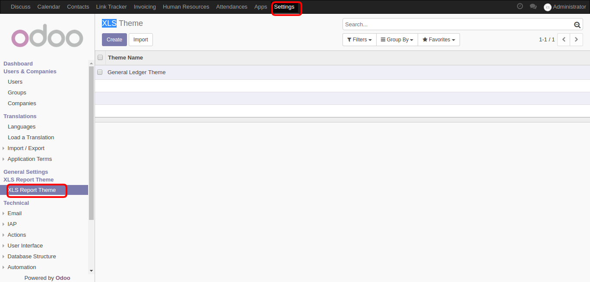
Apply your own styling and colors for each report separately.
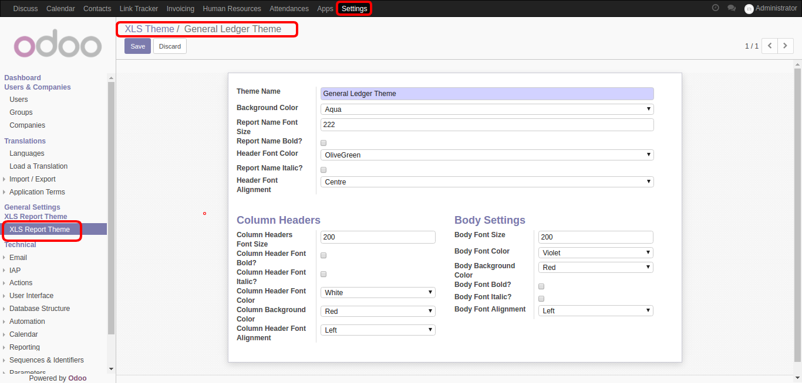
You can find a button 'Print XLS' on General Ledger Report wizard . Goto Invoicing-Reporting-PDF Reports-General Ledger.
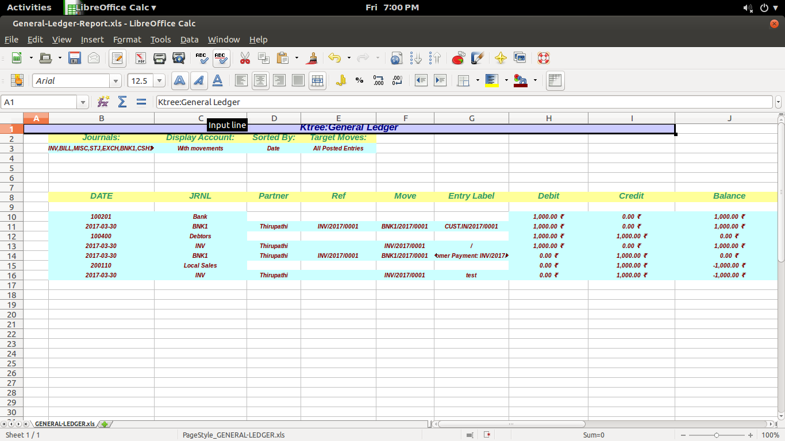
You can find a Button called as Print XLS on Trail Balance Report wizard . Goto Invoicing-Reporting-PDF Reports-Trail Balance
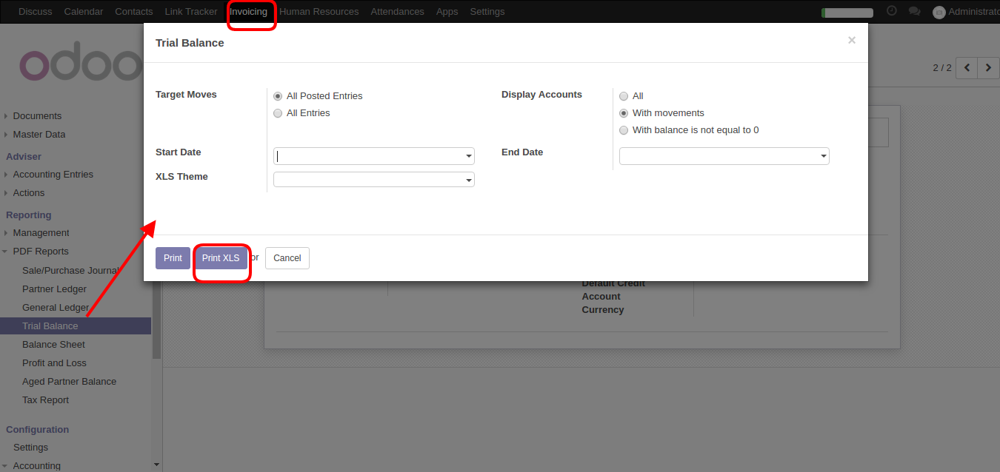
After Selecting Theme on Trail balance report wizard click on Print XLS Report . It will generate a Trail Balance XLS Report based on your theme selection
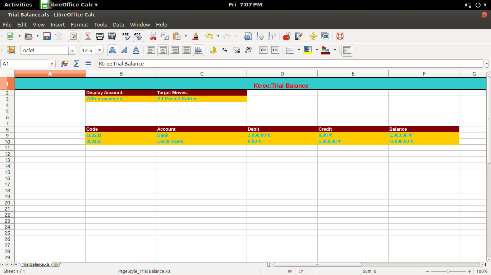
You can find a Button called as Print XLS on Balance Sheet Report wizard . Goto Invoicing-Reporting-PDF Reports-Balance Sheet
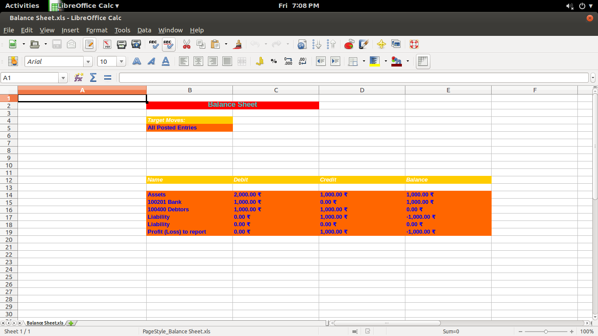
You can find a Button called as Print XLS on Profit and Loss Report wizard . Goto Invoicing-Reporting-PDF Reports-Profit and Loss
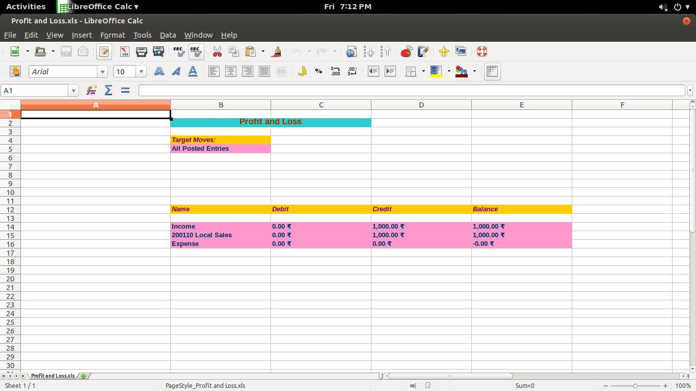
You can find a Button called as Print XLS on Aged Partner Balance wizard . Goto Invoicing-Reporting-PDF Reports-Aged Partner Balance
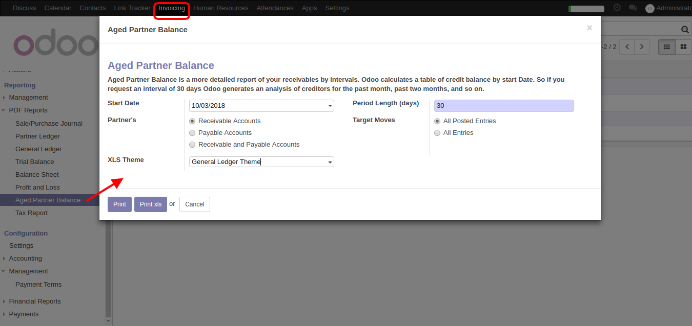
After Selecting Theme on Aged Partner Balance report wizard click on Print XLS Report . It will generate a Aged Partner Balance XLS Report based on your theme selection
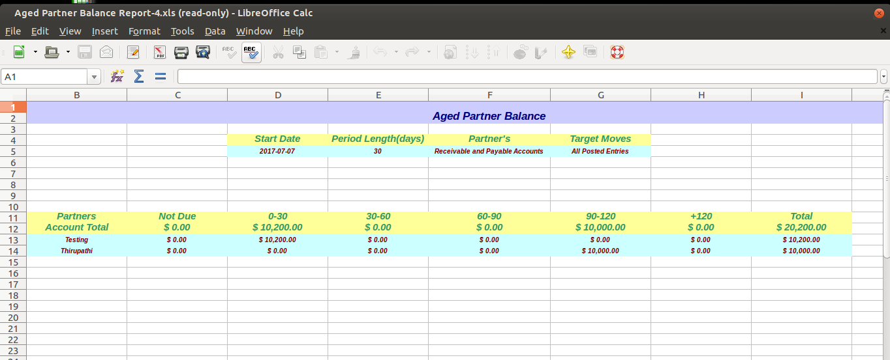
You can find a Button called as Print XLS on Partner Ledger Report wizard . Goto Invoicing-Reporting-PDF Reports-Partner Ledger
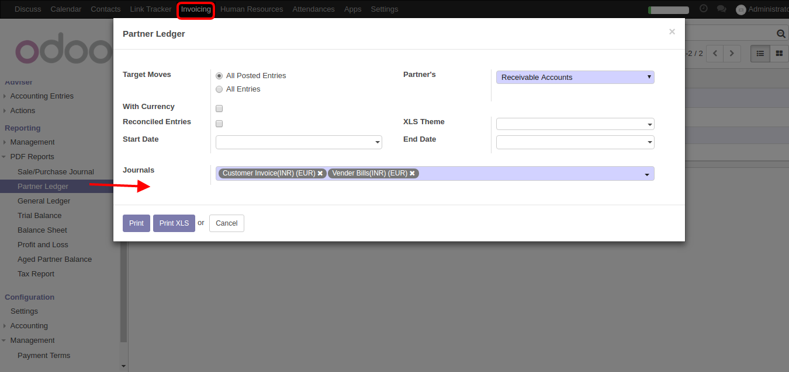
After Selecting Theme on Partner Ledger report wizard click on Print XLS Report . It will generate a Partner Ledger XLS Report based on your theme selection
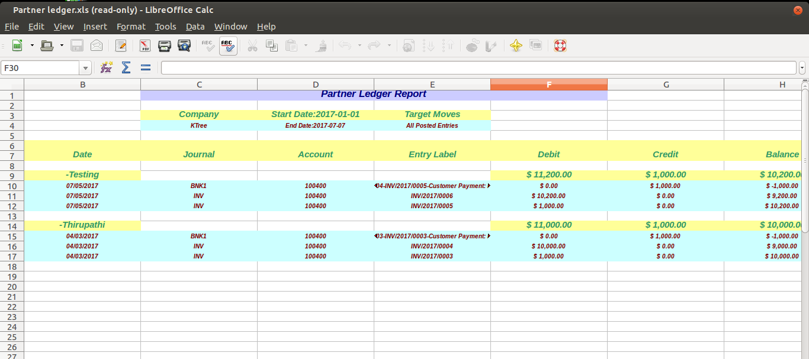
By default it will print the normal xls reports.
Note:This module will depend on xlwt Python Module
Please Install the python xlwt package before installing this module